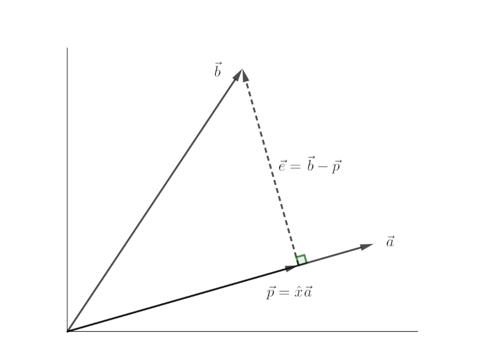
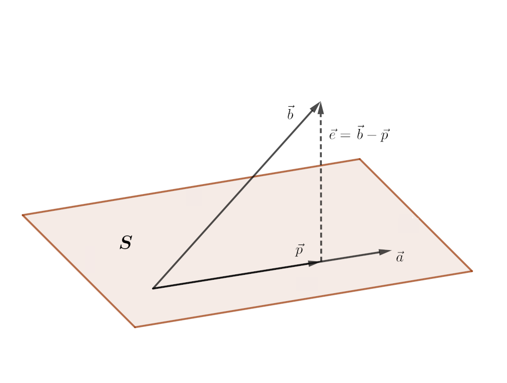
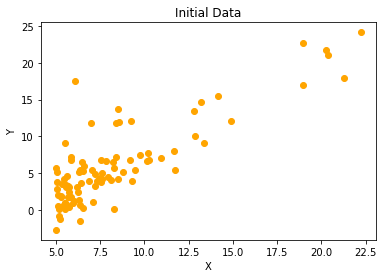
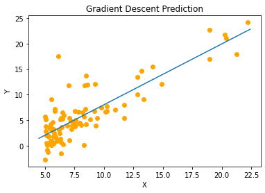
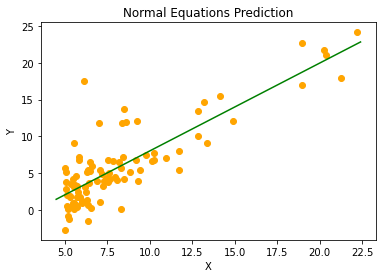

Linear Regression
Table of Contents
Hello. Today I want to write about Linear Regression. It is basically the "Hello, World" program of Machine Learning. It is used to model the relationship between one or more inputs and a single output. Its application ranges from engineering to business. It is a process of learning from data. It falls under supervised learning category of Maching Learning. Regarding the algorithm, we have a set of inputs (\(X\)) and their corresponding outputs (\(Y\)). From this,we try to come up with a linear equation that best fits the data. Then, we can use that equation to predict the output for new inputs.
There are mainly two ways to solve a linear regression problem. They are
- Gradient Descent
- Normal Equations
Both of these will be explained in the article, but first, let us state the problem a bit more clearly to avoid any confusions. Our dataset consists of \(n\) items, where each item has a set of \(d\) features, \(x_i\)'s, and a corresponding output, \(y\). We can summarize this information in following matrices.
\[ X_{n \space \times d} = \begin{bmatrix} (x^{(1)})^{T} \\ (x^{(2)})^{T} \\ \vdots \\ (x^{(n)})^{T} \\ \end{bmatrix} \]
\[ x^{(i)}_{d\space \times 1} = \begin{bmatrix} x_1 \\ x_2 \\ \vdots \\ x_{d} \\ \end{bmatrix} \]
\[ Y_{n \space \times 1} = \begin{bmatrix} y^{(1)} \\ y^{(2)} \\ \vdots \\ y^{(n)} \\ \end{bmatrix} \]
\(X\) is the matrix of independent input variables. Each row of \(X\) is a vector of features. The \(i^{th}\) element of \(Y\) is the corresponding output of \(i^{th}\) row of \(X\). Our goal is to create a hypothesis function, \(h\), that maps the vector \(x\) to the vector \(y\). Since this is a linear regression problem, it is obvious to think that the hypothesis function produces its output as the linear combination of its input, i.e. the hypothesis function scales each feature by some amount and sums them up including an additional constant term. We will denote the vector of scaling factors and constant by \(\theta\). As there are \(d\) features, scaling every feature would require \(d\) parameters. We also need a constant term. So, in total, we need \(d+1\) thetas, subscripted from \(0\) to \(d\), where \(\theta_0\) is the constant term. So, our parameter vector and hypothesis function looks like this:
\[ \theta = \begin{bmatrix} \theta_0 \\ \theta_1 \\ \vdots \\ \theta_d \end{bmatrix} \] \[ h(x) = \theta_0 + \sum_{i=1}^{d} \theta_{i} x_{i} \]
Now, our goal is to find the elements of \(\theta\).
Gradient Descent
It is an algorithm to find these parameters. Here, we define a loss function \(J(\theta)\), that is an indicator of the degree of error present in our model. We define this function in such a way that it captures inability of the model. The lower the value of \(J(\theta)\), the better parameters we have. So, we will have obtained the best choice for the elements of \(\theta\) if the error is as low as possible. There are different choices of loss function. One of the best choice for the loss function is the following:
\[ J(\theta) = \frac{1}{2n} \sum_{i=1}^{n} (h(x^{(i)}) - y^{(i)})^{2} \]
It is called squared error loss function. It effectively captures the error present in our model because each term in the series is the squared difference between the true value of \(y\) and the prediction made by the model, \(h(x)\). Hence, larger the difference, larger the error.
Now our goal is to minimize the value of the loss function of our model. Since this is a minimization problem, we can use calculus to make our work easier. Remember that our goal is to adjust the parameters, \(\theta\) to attain the values for which the loss function will be minimum. So, we take the derivative of the cost function, \(J(\theta)\) with respect to each \(\theta\) and then update the value of each \(\theta\) to make \(J(\theta)\) smaller. The loss function we have defined above is the loss considering all the training examples. For a single training example, the cost is
\[ J_i(\theta) = \frac{1}{2n} (h(x^{(i)}) - y^{(i)})^{2} \]
The derivative of this function with respect to a particular \(\theta_{j}\) is
\[ \frac{\partial }{\partial \theta_{j}} J_i(\theta) = \frac{\partial}{\partial \theta_{j}} \frac{1}{2n} (h(x^{(i)}) - y^{(i)})^2 \]
We must update the value of \(\theta{j}\):
\[ \theta_{j} := \theta_{j} - \alpha \frac{\partial}{\partial \theta_{j}} J(\theta) \] \[ \theta_{j} := \theta_{j} + \frac{\alpha}{n} (y^{(i)} - h(x^{(i)})) \space x_{j}^{(i)} \]
This should be done for all the values of \(j\). Here, \(\alpha\) is the learning rate. It is the step size taken to update the value of \(\theta\). Suitable value of \(\alpha\) should be chosen. Choosing a small value may result in slow convergence whereas too large value may not result in convergence. There are two ways of updating the values.
If we update the value of a single theta considering the all the training examples at once. This is called batch gradient descent. The algorithm for this is
\(Repeat\space until\space convergence\space\) { \[ \theta_{j} := \theta_{j} + \frac{\alpha}{n} \sum_{i=1}^n \space(y^{(i)} - h(x^{(i)})) \space x_{j}^{(i)}, \quad (for\space every\space j) \] }
On the other hand, if we updae the values of $θ$s by only looking at a single training example, it is called stochastic gradient descent. It is implemented as:
\(Loop\space\){
\(\quad for\space i = 1\space to\space n\) { \[ \theta_{j} := \theta_{j} + \frac{\alpha}{n} (y^{(i)} - h(x^{(i)})) \space x_{j}^{(i)}, \quad (for\space every\space j) \] \(\quad\)}
}
So, among batch GD and stochastic GD, which one should we use then? Upon looking the algorithm of batch GD, we find that there's a significant calculation before updating the values of theta as we have to calculate the summation term. This method is slower than stochastic GD which updates the value of \(\theta\) looking at just one training example at a time. This can speed up convergence. Loops are slow. For faster calculation, we must vectorize the operations as much as possible. I will show this in the implementation section.
Normal Equations
We can solve the problem of Linear Regression even without using calculus. As above, our dataset consists of \(X\), the matrix of independent variables and \(Y\), the matrix of outputs. We have to find the \(\theta\)'s for which following equation satisfies:
\begin{gather} \begin{bmatrix}1 & (x^{(0)})^{T}\\1 & (x^{(1)})^{T}\\\vdots\\1 & (x^{(n)})^{T}\\\end{bmatrix} \begin{bmatrix}\theta_0\\\theta_1\\\vdots\\\theta_d\end{bmatrix} = \begin{bmatrix}y^{(0)}\\y^{(1)}\\\vdots\\y^{(n)}\end{bmatrix} \end{gather}\[ A \quad \quad \quad \quad \quad \theta\quad =\quad Y \]
The matrix \(A\) is a matrix formed by augmenting a column with all elements 1 in front of matrix X. Alas! This system of equation will hardly have an exact solution, because the probability of all our data sets lying exactly on our fitting line is near to zero. So, what should we do then? We must project the vector \(Y\) onto the column space of \(A\) to make this system solvable. That may sound like a complicated process and you might even be wondering "What's a column space?". If you are, you need to understand some terminologies first. Next section will be dedicated to familiarizing you with these terms. After that, we'll proceed towards understanding this process. If you are already familiar with linear algebra, you can skip next section. Remember that these are not accurate mathematical definitions but some loose definitions that'll be sufficient for our purpose.
Some Terms
Linear Combination of a set of vectors is an expression constructed by multiplying each vector in the set by some constant and adding the results. For example, a linear combination of \(\vec{i}\), unit vector in x direction, and \(\vec{j}\), unit vector in y direction would be \(a\vec{i} + b\vec{j}\).
A set of vectors are Linearly Independent if there is a linear combination of the vectors equals zero vector, then each of the multiplying factors must be zero. For example, vectors \(\vec{i}\) and \(\vec{j}\) are independent, because no linear combination \(a\vec{i} + b\vec{j}\) would produce zero vector, unless \(a = 0\) and \(b = 0\).
Vector Space is a set of vectors closed under linear combination. That is, the linear combination of vectors inside the vector space will produce a vector which is also inside the space. \(\mathcal{R}^{N}\) is a vector space because any vector resulting from linear combination of the vectors inside \(\mathcal{R}^{N}\) will stay inside \(\mathcal{R}^{N}\)
A subspace is a subset of some larger vector space. A plane passing through origin can be considered a subspace inside \(\mathcal{R}^{3}\). It is because it is a subset of \(\mathcal{R}^{3}\) and linear combination of any number of vectors lying inside the plane will result in a vector which also lies inside it.
A Linear Span of a set of vectors is the subspace that is formed by linear combination of all the vectors in the set. For example, For \(S = \{\vec{i}, \vec{j}\}\), the span is \(\mathcal{R}^{2}\) because from the linear combination of \(\vec{i}\) and \(\vec{j}\), every vector in \(\mathcal{R}^{2}\) can be constructed. In other words, these two vectors reach entire \(\mathcal{R}^{2}\).
The basis vectors are the set of vectors which are just enough to span the subspace. Not too few, not too many. The basis of \(\mathcal{R}^{2}\) can be the set of \(\begin{bmatrix}1\\2\end{bmatrix}\) and \(\begin{bmatrix}3\\4\end{bmatrix}\) because they can span the entire \(\mathcal{R}^{2}\). If we add one more element to the set, for example, \(\begin{bmatrix}0\\1\end{bmatrix}\), that would be too many, we cannot call it a basis. Or if we remove any one element, we couldn't call that a basis either. Because a single vector cannot span \(\mathcal{R}^2\).
Column Space of a matrix is the subspace formed by the column vectors of the matrix. For a matrix \(\begin{bmatrix}1 & 3\\2 & 4\end{bmatrix}\), its columnspace is \(\mathcal{R}^{2}\). Since the columns of this matrix, \(\begin{bmatrix}1 \\ 2 \end{bmatrix}\) and \(\begin{bmatrix}3 \\ 4 \end{bmatrix}\) can reach the entire \(\mathcal{R}^{2}\). Whereas, for a matrix \(\begin{bmatrix}1 & 0 & 1\\0 & 1 & 1\\0 & 0 & 0\end{bmatrix}\), the columnspace is the \(x-y\) plane inside \(\mathcal{R}^{3}\). It is not \(\mathcal{R}^{3}\) because the linear combination of all columns only yields the vector of the form \(\begin{bmatrix}a\\b\\0\end{bmatrix}\). The third column can be constructed as \(1 \cdot\) (Column 1) + \(1 \cdot\) (Column 2). So it does not help in the construction of columnspace.
The meaning of Ax = b
Now let's understand the meaning of \(Ax = b\). Here \(A\) is a matrix, \(x\) is a vector and \(b\) is another vector. The matrix multiplication \(Ax\) is essentially the linear combination of the columns of \(A\). Here's a little demonstration
\[ A x = b \]
\begin{gather} \begin{bmatrix} a_{11} & a_{12} & \dots \\ \vdots & \ddots & \\ a_{m1} & & a_{mn} \end{bmatrix} \begin{bmatrix}x_1\\x_2\\\vdots\\x_n\end{bmatrix} = \begin{bmatrix}b_1\\b_2\\\vdots\\b_n\end{bmatrix} \end{gather} \begin{gather} x_1 \begin{bmatrix}a_{11}\\\vdots\\a_{m1}\end{bmatrix} + \dots + x_n \begin{bmatrix}a_{1n}\\\vdots\\a_{mn}\end{bmatrix} = \begin{bmatrix}b_1\\b_2\\\vdots\\b_n\end{bmatrix} \end{gather}So, when we're solving for the system \(Ax = b\), we are actually finding out the combination of the columns of \(A\) that will combine to form \(b\). For the solution to exist, \(b\) must be in the columnspace of \(A\) otherwise no combination of the columns of \(A\) can yield \(b\). And if no solution exists, as in the case of Normal Equations, we can still find the best answer by projecting \(b\) onto the columnspace of \(A\) and solving for the \(x\) which will combine to form the projection. So, next we need to understand about projection.
Projection
Let's say we want to project a vector \(\vec{b}\) onto a vector \(\vec{a}\). How do we do this? First, let's denote some terms to make it easier. We'll refer to the projection of \(\vec{b}\) onto \(\vec{a}\) as \(\vec{p}\). We also draw a vector from \(\vec{p}\) to the tip of vector \(\vec{b}\). It will be called error vector. It is \(\vec{e} = \vec{b} - \vec{p}\). Let's compute \(\vec{p}\). We know that \(\vec{p}\) is a multiple of \(\vec{a}\) as it lies in the same line as \(\vec{a}\). So, we can write \(\vec{p} = \hat{x}\vec{a}\). Since \(\vec{a}\) and \(\vec{e}\) are perpendicular to each other, we can write

\[ \vec{a} \cdot \vec{e} = 0 \]
\[ \vec{a} \cdot (\vec{b} - \vec{p}) = 0 \]
\[ \vec{a} \cdot (\vec{b} - \hat{x} \vec{a}) = 0 \]
On simple calculation, it yields
\[ \hat{x} = \frac{\vec{a} \cdot \vec{b}}{\vec{a} \cdot \vec{a}} = \frac{a^{T} \cdot b}{a^{T} \cdot a} \]
We can substitute dot product for vectors by multiplicaton of transpose of one with the other. It's a really trivial calculation. Try it out for yourself if you're still confused.
Now that we've understood the basics of projection, we'll try to understand the process of projecting a vector onto the column space of a matrix. It is not much different from what we did in the section above. There we projected a vector \(\vec{b}\) onto a single vector \(\vec{a}\). Here, instead of a single vector to project onto, we'll have multiple vectors, precisely the columns of the given matrix. Finding the projection of a vector onto a column space means finding a linear combination of the columns which is closest to the vector we're projecting. Let us say that \(A = \begin{bmatrix}\vec{a_1} \space \vec{a_2} \space \dots \space \vec{a_n} \end{bmatrix}\). The \(\vec{a_i}\)'s are the columns of \(A\). We're projecting \(\vec{b}\) onto the column space of \(A\). Let's denote that projection by \(\vec{p}\). The error vector is \(\vec{e} = \vec{b} - \vec{p}\) The projection \(\vec{p}\) must be some sombination of the columns of \(A\), i.e.

Figure 2: Projection of a vector onto a subspace
\[ \vec{p} = \hat{x}_1 \vec{a}_1 + \hat{x}_2 \vec{a}_2 + ... + \hat{x}_n \vec{a}_n \]
\[ \vec{p} = A \vec{x} \]
Here \(\vec{x}\) is the vector whose elements are the \(\hat{x_i}\)'s. From the above equation we can write the error vector as \(\vec{e} = \vec{b} - A \vec{x}\). To find the \(\hat{x}\)'s, we observe that as in the case of the line, the error vector is perpendicular to the entire subspace. It also means that it is perpendicular to each of the vectors in the subspace. So we can write
\[ a_1^{T} (\vec{b} - A \vec{x}) \]
\[ a_2^{T} (\vec{b} - A \vec{x}) \]
\[ \vdots \]
\[ a_n^{T} (\vec{b} - A \vec{x}) \]
This system of \(n\) equations can be described in terms of the following matrix equation
\[ A^{T} (\vec{b} - A \vec{x}) = 0 \]
On solving this, we get
\[ \vec{x} = (A^{T}A)^{-1}A^{T} \vec{b} \]
And the projection of \(\vec{b}\) onto the column space of \(A\) is
\[ \vec{p} = A \vec{x} = A (A^{T}A)^{-1}A^{T} \vec{b} \]
Now here's the final part of this whole calculation. Instead of solving for \(A \theta = Y\), we project \(Y\) onto the column space of A and solve for it. The projection of \(Y\) onto the column space of \(A\) is \(A \theta = A (A^{T}A)^{-1}A^{T} Y\).\(\quad\) So, we solve for \(\theta\) as follows
\[ A \theta = A (A^{T}A)^{-1}A^{T}Y \]
\[ \theta = A^{-1} A (A^{T}A)^{-1}A^{T}Y \]
\[ \theta = (A^{T}A)^{-1}A^{T}Y \]
Here's our parameters, \(\theta\). But one last question
remains. What if \(A\) is singular? It means \(A\) has no
inverse. this case, we calculate the pseudo inverse of (\(A^{T} A\))
instead of inverse. Pseudo inverse is an another big topic that'll
require an entire article to explain. So, to keep this article
short, I'm not going into that detail. In implementation, we
should use functions like numpy.linalg.pinv in python, or pinv
in matlab.
Implementation
Coding
This is our data

Figure 3: Dataset Visualized
- Gradient Descent
You need to read the
XandYvariables from some file using a library like Pandas and convert them to numpy array with appropriate dimensions. Also, you need to augment theXvariable with a column of1to make the number of columns ofXsame as that of the number of rows oftheta. Here is a gradient descent function for linear regression in python usingnumpy.import numpy as np def gradient_descent(X, Y, theta, learning_rate, num_iters): n = np.shape(X)[0] for i in range(num_iters): # calculate the current prediction prediction = np.matmul(X, theta) # obtain the error error_vector = Y - prediction # Update the thetas. Here I've vectorized the operation of # updating thetas try matching dimensions of multiplied # matrices to understand the operation theta = theta + (learning_rate/n) * np.matmul(np.transpose(X), error_vector) return thetaHere is the result from gradient descent running on my computer:

Figure 4: Result from gradient descent
- Normal Equations
This algorithm is easier than the Gradient Descent one. It is only the matter of matrix manipulation. Here is a python function for normal equations.
import numpy as np def normal_equations(X, Y): # Calculate the transpose X_T = np.transpose(X) # This step can be combined with the step below # This is done to make the return statement concise. intermediate = np.linalg.pinv(np.matmul(X_T, X)) return np.matmul(np.matmul(intermediate, X_T), Y)This predictor is what normal equations yields on my machine:

Figure 5: Result from normal equations
As you can see both algorithms perform equally good. It is because our data set is small(only about a hundred items) and gradient descent reaches the minimum value quickly. And I've used sufficient number of iterations (> 2000) for our purpose. On large dataset, it may be a little less accurate than the Normal Equations. In that case, you'd need to increase the number of iterations.
How to make a higher dimensional predictor?
We should generate more features on \(X\). If we only have one dimensional input, we can make it two dimensional by mapping the first column to a square function and using the output as a second column of X. Then our model will provide us with three parameters, the coefficients of each degree term in a quadratic equation.
Which one is better?
For a system with \(d\) features and \(n\) data items, the time complexity of gradient descent is \(O(n^2 d)\) whereas that of the normal equations is \(O(n^3)\). It is pretty obvious that for smaller datasets, you'd use normal equation as it provides you with more accurate result than gradient descent. But for large datasets, especially with number of features less than the number of data items, gradient descent is the only good choice.
Closing Words
This program is the entry point of any student to Machine Learning. It may not feel like much (or it may, depending upon the reader 😉) but it gives you a speak peek into the paradigm of Machine Learning. This is what let's our computers see and talk. Isn't it amazing?